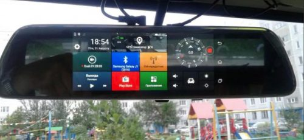
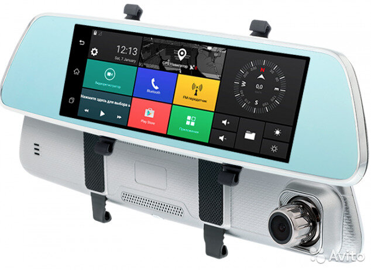

Бортовой компьютер Fugicar FC8 является продуктом разработки Японских инженеров. Выполнен в качественном, стильном, ультратонком корпусе, который приятно дополняет интерьер автомобиля любого класса, а новый интуитивно понятный интерфейс на русском языке позволяет быстро и легко использовать все функции.
Функциональный видеорегистратор для записи происходящего на дороге. Обладает объединенной системой камеры и стандартного зеркала заднего вида. Аппарат выполняет не только функцию регистратора, но и небольшого мультимедийного центра. Позволяет не занимать пространство обзора и максимально лаконично внедрить систему видеорегистрации в своё авто.
Fugicar FC8 обеспечивает безопасное и комфортное вождение. Ультратонкий корпус устройства выполнен в универсальном компактном размере, идеально сочетающемся с салонами различных автомобилей. Зеркало не загромождает салон и не закрывает обзор водителя, а специальный зеркальный материал обеспечивает четкий задний обзор.
Только четкое изображение Full HD, в сочетании с синхронной записью DualCam (+камера заднего вида) и записью траектории движения GPS, поможет защитить Вас от автоподстав, неправомерных действий сотрудников ГИБДД и, самое главное, доказать вашу правоту в суде.
Внешние рамки прибора тонкие. Тыльная сторона окрашена в металлический цвет. Корпус объектива выполнен как рифленый оттиск. Динамический прибор.
В выключенном состоянии Фуджикар выполняет единственную функцию — отображает происходящее сзади. Ширина составляет 300 мм, а высота — 80 мм. Крепление осуществлено на нескольких резинках с регулируемой длиной. Подходит ко всем штатным зеркалам.
Обзор экрана позволяет видеть картинку со стороны пассажирского сиденья. Угол раскрытия картинки более 90 градусов. Матрица IPS является сохраненной цветопередачей и насыщенностью изображения.
Если бы лет 15 назад мне кто-нибудь сказал, что в авто будет зеркало, в котором есть видеокамера, радар, навигатор, телефон с выходом в интернет и еще множество "приблуд"! Я бы сказал, что он любитель научной фантастики и пересмотрел фильмы про Джеймса Бонда! Но жизнь движется вперед семимильными шагами, и теперь все это реальность! Этот аксесуар явно заслуживает уважения простого потребителя и внимания со стороны автолюбителей...